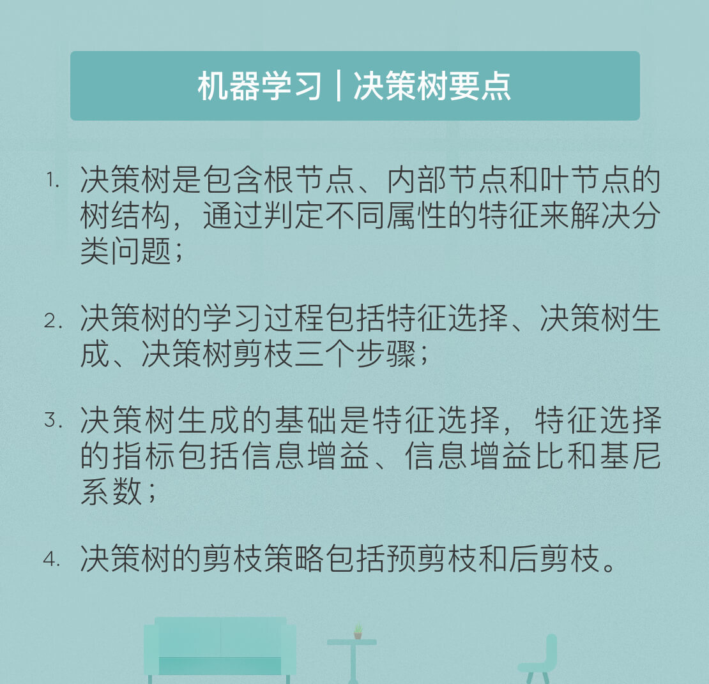

- 00 开篇词 人工智能：新时代的必修课.md.html
- 01 数学基础 九层之台，起于累土：线性代数.md.html
- 02 数学基础 月有阴晴圆缺，此事古难全：概率论.md.html
- 03 数学基础 窥一斑而知全豹：数理统计.md.html
- 04 数学基础 不畏浮云遮望眼：最优化方法.md.html
- 05 数学基础 万物皆数，信息亦然：信息论.md.html
- 06 数学基础 明日黄花迹难寻：形式逻辑.md.html
- 07 机器学习 数山有路，学海无涯：机器学习概论.md.html
- 08 机器学习 简约而不简单：线性回归.md.html
- 09 机器学习 大道至简：朴素贝叶斯方法.md.html
- 10 机器学习 衍化至繁：逻辑回归.md.html
- 11 机器学习 步步为营，有章可循：决策树.md.html
- 12 机器学习 穷则变，变则通：支持向量机.md.html
- 13 机器学习 三个臭皮匠，赛过诸葛亮：集成学习.md.html
- 14 机器学习 物以类聚，人以群分：聚类分析.md.html
- 15 机器学习 好钢用在刀刃上：降维学习.md.html
- 16 人工神经网络 道法自然，久藏玄冥：神经网络的生理学背景.md.html
- 17 人工神经网络 一个青年才俊的意外死亡：神经元与感知器.md.html
- 18 人工神经网络 左手信号，右手误差：多层感知器.md.html
- 19 人工神经网络 各人自扫门前雪：径向基函数神经网络.md.html
- 20 人工神经网络 看不见的手：自组织特征映射.md.html
- 21 人工神经网络 水无至清，人莫至察：模糊神经网络.md.html
- 22 深度学习 空山鸣响，静水流深：深度学习概述.md.html
- 23 深度学习 前方有路，未来可期：深度前馈网络.md.html
- 24 深度学习 小树不修不直溜：深度学习中的正则化.md.html
- 25 深度学习 玉不琢不成器：深度学习中的优化.md.html
- 26 深度学习 空竹里的秘密：自编码器.md.html
- 27 深度学习 困知勉行者勇：深度强化学习.md.html
- 28 深度学习框架下的神经网络 枯木逢春：深度信念网络.md.html
- 29 深度学习框架下的神经网络 见微知著：卷积神经网络.md.html
- 30 深度学习框架下的神经网络 昨日重现：循环神经网络.md.html
- 31 深度学习框架下的神经网络 左右互搏：生成式对抗网络.md.html
- 32 深度学习框架下的神经网络 三重门：长短期记忆网络.md.html
- 33 深度学习之外的人工智能 一图胜千言：概率图模型.md.html
- 34 深度学习之外的人工智能 乌合之众的逆袭：集群智能.md.html
- 35 深度学习之外的人工智能 授人以鱼不如授人以渔：迁移学习.md.html
- 36 深度学习之外的人工智能 滴水藏海：知识图谱.md.html
- 37 应用场景 你是我的眼：计算机视觉.md.html
- 38 应用场景 嘿, Siri：语音处理.md.html
- 39 应用场景 心有灵犀一点通：对话系统.md.html
- 40 应用场景 数字巴别塔：机器翻译.md.html
- 一键到达 人工神经网络复习课.md.html
- 一键到达 应用场景复习课.md.html
- 一键到达 数学基础复习课.md.html
- 一键到达 机器学习复习课.md.html
- 一键到达 深度学习之外的人工智能复习课.md.html
- 一键到达 深度学习复习课.md.html
- 一键到达 深度学习框架下的神经网络复习课.md.html
- 推荐阅读 我与人工智能的故事.md.html
- 新书 《裂变：秒懂人工智能的基础课》.md.html
- 直播回顾 机器学习必备的数学基础.md.html
- 第2季回归 这次我们来聊聊机器学习.md.html
- 结课 溯洄从之，道阻且长.md.html
- 课外谈 “人工智能基础课”之二三闲话.md.html
- （课外辅导）人工神经网络 拓展阅读参考书.md.html
- （课外辅导）数学基础 拓展阅读参考书.md.html
- （课外辅导）机器学习 拓展阅读参考书.md.html
- （课外辅导）深度学习 拓展阅读参考书.md.html
- 捐赠
11 机器学习 步步为营，有章可循：决策树
决策树算法是解决分类问题的另一种方法。与基于概率推断的朴素贝叶斯分类器和逻辑回归模型不同，决策树算法采用树形结构，使用层层推理来实现最终的分类。与贝叶斯分类器相比，决策树的优势在于构造过程无需使用任何先验条件，因而适用于探索式的知识发现。
决策树的分类方法更接近人类的判断机制，这可以通过买房的实例说明。
面对眼花缭乱的房源，普通人优先考虑的都是每平方米的价格因素，价格不贵就买，价格贵了就不买。在价格合适的前提下，面积就是下一个待确定的问题，面积不小就买，面积小了就不买。如果面积合适，位置也是不容忽视的因素，单身业主会考虑房源离工作地点的远近，离单位近就买，离单位远就不买；为人父母的则要斟酌是不是学区房，是学区房就买，不是学区房就不买。如果位置同样称心，就可以再根据交通是否便捷、物业是否良好、价格是否有优惠等条件进一步筛选，确定最后的购买对象。
前面的例子模拟了一套购房策略。在这套策略中，业主对每个可选房源都要做出“买”与“不买”的决策结果，而“每平米价格”、“房屋面积”、“学区房”等因素共同构成了决策的判断条件，在每个判断条件下的选择表示的是不同情况下的决策路径，而每个“买”或是“不买”的决定背后都包含一系列完整的决策过程。决策树就是将以上过程形式化、并引入量化指标后形成的分类算法。
决策树是一个包含根节点、内部节点和叶节点的树结构，其根节点包含样本全集，内部节点对应特征属性测试，叶节点则代表决策结果。从根节点到每个叶节点的每条路径都对应着一个从数据到决策的判定流程。使用决策树进行决策的过程就是从根节点开始，测试待分类项的特征属性，并按照其值选择输出的内部节点。当选择过程持续到到达某个叶节点时，就将该叶节点存放的类别作为决策结果。
由于决策树是基于特征对实例进行分类的，因而其学习的本质是从训练数据集中归纳出一组用于分类的“如果……那么……”规则。在学习的过程中，这组规则集合既要在训练数据上有较高的符合度，也要具备良好的泛化能力。决策树模型的学习过程包括三个步骤：特征选择、决策树生成和决策树剪枝。
特征选择决定了使用哪些特征来划分特征空间。在训练数据集中，每个样本的属性可能有很多个，在分类结果中起到的作用也有大有小。因而特征选择的作用在于筛选出与分类结果相关性较高，也就是分类能力较强的特征。理想的特征选择是在每次划分之后，分支节点所包含的样本都尽可能属于同一个类别。
在特征选择中通常使用的准则是信息增益。机器学习中的信息增益就是通信理论中的互信息，是信息论的核心概念之一。信息增益描述的是在已知特征后对数据分类不确定性的减少程度，因而特征的信息增益越大，得到的分类结果的不确定度越低，特征也就具有越强的分类能力。根据信息增益准则选择特征的过程，就是自顶向下进行划分，在每次划分时计算每个特征的信息增益并选取最大值的过程。信息增益的计算涉及信源熵和条件熵的公式，这在前面的专栏内容中有所涉及，在此就不重复了。
信息增益的作用可以用下面的实例来定性说明。
在银行发放贷款时，会根据申请人的特征决定是否发放。假设在贷款申请的训练数据中，每个样本都包含年龄、是否有工作、是否有房产、信贷情况等特征，并根据这些特征确定是否同意贷款。一种极端的情形是申请人是否有房产的属性取值和是否同意贷款的分类结果完全吻合，即在训练数据中，每个有房的申请人都对应同意贷款，而每个没房的申请人都对应不同意贷款。这种情况下，“是否有房产”这个特征就具有最大的信息增益，它完全消除了分类结果的不确定性。在处理测试实例时，只要根据这个特征就可以确定分类结果，甚至无需考虑其他特征的取值。
相比之下，另一种极端的情形是申请人的年龄和是否同意贷款的分类结果可能完全无关，即在训练数据中，青年/中年/老年每个年龄段内，同意贷款与不同意贷款的样本数目都大致相等。这相当于分类结果在年龄特征每个取值上都是随机分布的，两者之间没有任何规律可言。这种特征的信息增益很小，也不具备分类能力。一般来说，抛弃这样的特征对决策树学习精度的影响不大。
在最早提出的决策树算法——ID3算法中，决策树的生成就利用信息增益准则选择特征。ID3算法构建决策树的具体方法是从根节点出发，对节点计算所有特征的信息增益，选择信息增益最大的特征作为节点特征，根据该特征的不同取值建立子节点；对每个子节点都递归调用以上算法生成新的子节点，直到信息增益都很小或没有特征可以选择为止。
ID3算法使用的是信息增益的绝对取值，而信息增益的运算特性决定了当属性的可取值数目较多时，其信息增益的绝对值将大于取值较少的属性。这样一来，如果在决策树的初始阶段就进行过于精细的分类，其泛化能力就会受到影响，无法对真实的实例做出有效预测。
为了避免信息增益准则对多值属性的偏好，ID3算法的提出者在其基础上提出了改进版，也就是 C4.5算法。C4.5算法不是直接使用信息增益，而是引入“信息增益比”指标作为最优划分属性选择的依据。信息增益比等于使用属性的特征熵归一化后的信息增益，而每个属性的特征熵等于按属性取值计算出的信息熵。在特征选择时，C4.5算法先从候选特征中找出信息增益高于平均水平的特征，再从中选择增益率最高的作为节点特征，这就保证了对多值属性和少值属性一视同仁。在决策树的生成上，C4.5算法与ID3算法类似。
无论是ID3算法还是C4.5算法，都是基于信息论中熵模型的指标实现特征选择，因而涉及大量的对数计算。另一种主要的决策树算法CART算法则用基尼系数取代了熵模型。
CART算法的全称是分类与回归树（Classification and Regression Tree），既可以用于分类也可以用于回归。假设数据中共有\(K\)个类别，第\(k\)个类别的概率为\(p_k\)，则基尼系数等于\(1 - \\sum\\limits_{i = 0}^K p_k^2\)。基尼系数在与熵模型高度近似的前提下，避免了对数运算的使用，使得CART分类树具有较高的执行效率。
为了进一步简化分类模型，CART分类树算法每次只对某个特征的值进行二分而非多分，最终生成的就是二叉树模型。因而在计算基尼系数时，需要对每个特征找到使基尼系数最小的最优切分点，在树生成时根据最优特征和最优切分点生成两个子节点，将训练数据集按照特征分配到子节点中去。如果在某个特征\(A\)上有\(A_1\)、\(A_2\)和\(A_3\)三种类别，CART分类树在进行二分时就会考虑{\(A_1\)}/{\(A_2, A_3\)}、{\(A_2\)}/{\( A_1, A_3\)}、{\(A_3\)}/{\( A_1, A_2\)}这三种分类方法，从中找到基尼系数最小的组合。
同其他机器学习算法一样，决策树也难以克服过拟合的问题，“剪枝”是决策树对抗过拟合的主要手段。
园丁给树苗剪枝是为了让树形完好，决策树剪枝则是通过主动去掉分支以降低过拟合的风险，提升模型的泛化性能。
那么如何判定泛化性能的提升呢？其方法是定义决策树整体的损失函数并使之极小化，这等价于使用正则化的最大似然估计进行模型选择。另一种更简单的方法是在训练数据集中取出一部分用于模型验证，根据验证集分类精度的变化决定是否进行剪枝。
决策树的剪枝策略可以分为预剪枝和后剪枝。
预剪枝是指在决策树的生成过程中，在划分前就对每个节点进行估计，如果当前节点的划分不能带来泛化性能的提升，就直接将当前节点标记为叶节点。
预剪枝的好处在于禁止欠佳节点的展开，在降低过拟合风险的同时显著减少了决策树的时间开销。但它也会导致“误伤”的后果，某些分支虽然当前看起来没用，在其基础上的后续划分却可能让泛化性能显著提升，预剪枝策略将这些深藏不露的节点移除，无疑会矫枉过正，带来欠拟合的风险。
相比之下，后剪枝策略是先从训练集生成一棵完整的决策树，计算其在验证集上的分类精度，再在完整决策树的基础上剪枝，通过比较剪枝前和剪枝后的分类精度决定分支是否保留。和预剪枝相比，后剪枝策略通常可以保留更多的分支，其欠拟合的风险较小。但由于需要逐一考察所有内部节点，因而其训练开销较大。
以上的决策树算法虽然结构上简单直观，逻辑上容易解释，但一个重要缺点是“一言堂”，即只依据一个最优特征执行分类决策。
在实际问题中，分类结果通常会受到多个因素的影响，因而需要对不同特征综合考虑。依赖多个特征进行分类决策的就是多变量决策树。在特征空间上，单变量决策树得到的分类边界是与坐标轴平行的分段，多变量决策树的分类边界则是斜线的形式。受篇幅所限，关于多变量决策树的内容在此不做赘述。
今天我和你分享了机器学习基本算法之一的决策树的基本原理，其要点如下：
- 决策树是包含根节点、内部节点和叶节点的树结构，通过判定不同属性的特征来解决分类问题；
- 决策树的学习过程包括特征选择、决策树生成、决策树剪枝三个步骤；
- 决策树生成的基础是特征选择，特征选择的指标包括信息增益、信息增益比和基尼系数；
- 决策树的剪枝策略包括预剪枝和后剪枝。
在对决策树算法的分析中，自始至终都没有涉及似然概率和后验概率这些之前频繁出现的概念，但这并不意味着决策树算法与概率论完全无关。如何从概率角度看待决策树呢？
欢迎发表你的观点。

© 2019 - 2023 Liangliang Lee. Powered by gin and hexo-theme-book.